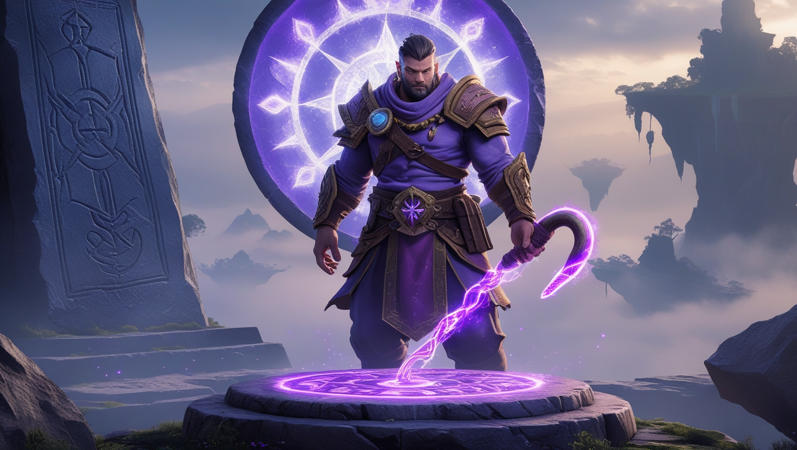

Glory of Hook ile kendinizi oyunun içine bırakın
İnanılmaz bir yolculuğun sizi beklediği uçan adalar oyununa hoş geldiniz. Glory of Hook'ta, kaderi gizemli bir araca bağlı olan Jake Amca'yı arayacaksınız. Moontrap, bölge sakinleri arasında bir efsane haline gelmiş, topraklarında ışık ve denge vaat eden bir araçtır.
Giriş
Moontrap, bu fantastik dünyanın sakinleri arasında bir efsane haline geldi; gökyüzünde süzülen topraklarına ışık ve denge vaat ediyor. Jake Amca, yorulmak bilmeyen bir kaşif ve hayalperest, hayatını Moontrap’ı aramaya adadı ve onun gizemli gücünü ortaya çıkarmaya çalıştı. O, Moontrap’ın sadece bir araç değil, bu dünyanın kaderini değiştirebilecek daha büyük bir şey olduğuna inanıyordu. Şimdi sıra sizde; Jake Amca’nın açtığı yolda ilerleyin ve onun notlarında bıraktığı Moontrap izlerini takip edin. Enerji kancasını kullanarak Moontrap’ın meraklı gözlerden saklandığı uzak köşelere ulaşın ve bu gizemli eserin sırlarını keşfedin. Adalar arasındaki uçurumlar ve karanlıkta parlayan kristal mağaralar, Moontrap’ın yankılarını barındırıyor ve sizi sessiz ışığıyla çağırıyor. Bu maceradaki her adım sizi Moontrap’a yaklaştırırken, her kanca atlayışı onun özünü anlamanıza bir meydan okuma sunuyor. Bu yolculuk cesaret ve keşif arzusuyla dolu; Moontrap, hikayeyi mistik etkisiyle baştan sona sarıyor. Moontrap’ı bulabileceğinizi, amacını çözebileceğinizi ve Jake Amca’nın bu araca çok yaklaştığında neden kaybolduğunu anlayabileceğinizi kanıtlayın. Moontrap sizi derinliklerde bir yerde bekliyor ve ışığı, bu destansı hikayede rehberiniz olacak.
Glory of Hook — Arama ve Parkur Hikayesi
Moontrap’a takıntılı bir kaşif olan Jake Amca’yı bulmak isteyen bir kahramanı oynuyorsunuz. Söylentilere göre Moontrap, uçan adaları ay ışığıyla besleyerek ayakta tutan bir araçtır. Jake Amca, Moontrap hakkında esrarengiz notlar bıraktı ve onu bulmaya çalışırken kayboldu. Yolculuğunuz, Moontrap’ın izlerini taşıyan büyüleyici topraklardan geçiyor. Kanca ve jet botlarınızı kullanarak uçurumları aşın ve Moontrap ile bağlantılı yerlere ulaşın. Bu dünyanın sakinleri, Moontrap’ın kurtuluşları olduğuna inanıyor, ancak bazıları gücünden korkuyor. Derinlere indikçe Moontrap ve etkisi hakkında daha fazla şey öğreniyorsunuz. Mağaralar, harabeler ve adalar onun varlığıyla dolup taşıyor. Jake Amca’nın çözemediği sırrı siz ortaya çıkarabilecek misiniz? Moontrap, yolun sonunda sizi cevaplar ve zorluklarla bekliyor.
Glory of Hook Benzersiz Bir Deneyim Sunuyor
Sizi harikalar ve tehlikelerle dolu fantastik mekanlardan geçirecek heyecan verici kanca atlayışları sizi bekliyor. Her şeyin merkezinde, Jake Amca’nın hayatını adadığı gizemli bir araç olan Moontrap yer alıyor; onun inanılmaz gücüne inanıyordu. Moontrap’ın ışığının parlayan kristallerde yansıdığı, büyüleyici bir manzara yaratan uçan adaları keşfedin. Bu dünyanın sakinleriyle tanışın; kaderleri ve hikayeleri Moontrap ile bağlantılıdır ve bu eserde kurtuluşlarını neden gördüklerini öğrenin. Oyunun her seviyesi, Moontrap’ın özünü anlamaya ve derinliklerde saklı sırlarını çözmeye bir adımdır. Gökyüzünü kesen uçurumlar ve Moontrap’ın yankılarının duyulduğu karanlık mağaralar, çevikliğinizi ve kararlılığınızı test edecek. Moontrap sadece bir hedef değil, sizi ileriye çağıran bu yolculuğun kalbidir. Glory of Hook sadece bir oyun değil, Moontrap’ın sizi Jake Amca’nın kaderini çözmeye götürdüğü epik bir maceraya tam bir dalış.
Glory of Hook bir platform oyunundan fazlasıdır. Jake Amca’nın Moontrap hakkında bıraktığı ipuçlarıyla dolu bir gizem dünyasına dalıyorsunuz. Bu araç, uçan adalar arasında saklı umut ve riski simgeliyor. Kancayı kullanarak onun çağrısını hissederek toprakları keşfedin. Bu yolculuk, gizemler ve güzelliklerle dolu.
Efsaneler, Moontrap’ın adaları gökyüzünde tuttuğunu söylüyor, ancak gerçek gizli. Jake Amca, Moontrap’ı aradı ve kaderi belirsiz. Moontrap ile bağlantılı harabelerden ve uçurumlardan geçerek cevapları bulun. Oyunun atmosferi büyüleyici, hikaye her adımla derinleşiyor.
Moontrap, maceraya derinlik ve zorluklar katıyor. Jake Amca’ya ne olduğunu, bu dünyanın her köşesini keşfederek öğrenin. Bu oyun, gizemleri ve çevikliği sevenler için. Moontrap’ın yolun sonunda beklediği büyüleyici bir yolculuğa dalın.